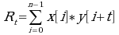

Proposed
Xcorr scoring method
1. Process observed spectrum.
Remove peaks with m/z that are greater than experimental_mass + 50
All peak's
location(m/z) are rounded to the nearest integer by
new_m/z =
int( old_m/z / bin_width + 0.5 ).
If there are multiple peaks
with the same rounded m/z, choose only the max intensity peak and
remove the smaller peaks.
Remove peaks within +/- 15 m/z of the precursor ion
Divide the spectrum(0 m/z ~ experimental_mass + 50 m/z) into 10 equal regions, normalize the ions intensity in each region to 50.0.
2. Create theoretical spectrum with candidate peptide.
Add peaks of intensity 50.0 for B, Y type ions. In addition, add peaks of intensity of 25.0 to +/- 1 m/z flanking each B, Y ion.
All peak's location(m/z) are rounded to
the nearest integer by
new_m/z = int( old_m/z / bin_width + 0.5
).
Add peaks of intensity of 10.0 for neutral loss of H2O, ammonia and A type ions. In addition, add peaks of intensity of 10.0 to +/- 1 m/z flanking each neutral loss, A type ion.
3. Calculate Xcorr,

x = theoretical spectrum
y = observed experimental spectrum
Comments
All red colored sections are speculated steps, based on Sp scoring method.
It is unclear what to do with peaks with identical m/z location.
Is the final Xcorr normalized score?